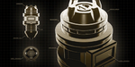
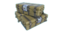

Research (LWOTC)
The majority of research projects from Long War 2 exist in LWOTC in an unchanged form, but there are some key differences resulting from, among other factors, the introduction of new enemy types and hero classes, as well as some balance tweaks.
The Power Core of the Avenger doubles as its main Research laboratory, headed by Dr. Tygan. Research in Long War of the Chosen has been expanded with two more weapon tier techs, one more autopsy, and more Proving Grounds projects unlocked by autopsies.
- Unlocked items in bold don't need any other project, while items in italics need another research or Proving Grounds project to be fully available.
- Projects with a yellow background form part of the Golden Path: the elements that progress the storyline.
Research Time
The time to research a project is based on a points system: each project has a required amount of points to complete, and each hour a number of points is added depending on the number of scientists in the Avenger and how they're staffed.
At the start of the game, the only contribution to research comes from Tygan, counting as a scientist contributing 10 science points per hour, but he cannot be assigned to any scientist staff slots. Each additional scientist contributes another 5 points per hour, increasing to 10 if they're working in a laboratory, but if they're staffed in any other facility, they won't be able to contribute to research.
The "Basic Research" project will increase the base points per hour by 5, and it is infinitely repeatable, but each completion increases the cost of the next one by 2800 points.
Basic Projects
These projects increase XCOM's efficiency at research and engineering, reducing staff requirements and increasing speed. They can be repeated indefinitely, but each time they are completed the time for the next repeat increases.
| Research |
Points Cost |
Effect |
|---|---|---|
|
Basic Research |
5200
(+2800 for each completion) |
Increases effective scientists for project prerequisites by 1
Increases science speed by 5 points per hour |
|

Basic Engineering |
5200
(+2800 for each completion) |
Increases effective engineers for project prerequisites by 1 |
Resistance
These projects unlock facilities for contacting the Resistance in more regions. In addition to the time invested, they now have an intel cost.
| Research | Prerequisites | Cost | Unlocks | ||
|---|---|---|---|---|---|
|
Research |
Points |
Intel |
Research | Facilities | |
Resistance CommunicationsResistance Communications |
- | 1250 | 20 | Resistance Radio | Resistance Comms |
Resistance RadioResistance Radio |
Resistance Communications | 4000 | 60 | - |
Radio Relays
Additional Comm Station (Resistance Comms upgrade) |
Xenology
These projects study the aliens' capabilities in a way that doesn't fit in other categories.
| Research | Prerequisites | Cost | Unlocks | ||||
|---|---|---|---|---|---|---|---|
|
Research |
Points |

Supplies |
Research | Proving Ground | Facilities | Items | |
Alien Biotech
Alien Biotech |
- | 1300 | - | Most autopsies | Hazmat Vest | - | AP Rounds |
Psionics
Psionics |
Sectoid Autopsy | 4500 | 30 |
Gatekeeper Autopsy
Shadow Armor |
- |
Psi Lab
Second Cell (Psi Lab upgrade) |
Neurowhip
Advanced Psi Amp Alien Psi Amp |
Alien Autopsies
Once Alien Biotech has been researched, corpses recovered from some missions can be autopsied. If enough corpses are available, the autopsy will take no time to complete, but only one corpse will be consumed.
| Research | Prerequisites | Cost | Unlocks | ||||
|---|---|---|---|---|---|---|---|
|
Research |
Points |
Corpses |
Research | Proving Ground | Facilities | Items | |
Sectoid AutopsySectoid Autopsy |
Alien Biotech | 2200 |
1x Sectoid Corpse
(10x for Instant) |
Psionics | Talon Rounds | - |
Mind Shield
Advanced PCS: Focus |
Viper Autopsy
Viper Autopsy |
Alien Biotech | 2500 |
1x Viper Corpse
(10x for Instant) |
Viper King Autopsy |
Battlefield Medicine
Venom Rounds Gas Grenade |
- | - |
Muton Autopsy
Muton Autopsy |
Alien Biotech | 3500 |
1x Muton Corpse
(10x for Instant) |
Berserker Autopsy
Muton Elite Autopsy |
Tactical Vest
Plasma Grenade |
- | Vibroblade |
Berserker AutopsyBerserker Autopsy |
Muton Autopsy | 3500 |
1x Berserker Corpse
(10x for Instant) |
Berserker Queen Autopsy | Hellweave | - | Overdrive Serum |
Muton Elite Autopsy
Muton Elite Autopsy |
Muton Autopsy | 4000 |
1x Muton Elite Corpse
(10x for Instant) |
- |
Carapace Plating
Dragon Rounds |
- | Blaster Gauntlet |
Archon Autopsy
Archon Autopsy |
Alien Biotech | 4000 |
1x Archon Corpse
(10x for Instant) |
Archon King Autopsy | Acid Grenade | - |
Fusion Blade
Fusion Axe |
Faceless AutopsyFaceless Autopsy |
Alien Biotech | 3500 |
1x Faceless Corpse
(10x for Instant) |
- |
Chameleon Suit
Needle Rounds |
- | - |
Chryssalid AutopsyChryssalid Autopsy |
Alien Biotech | 2500 |
1x Chryssalid Corpse
(10x for Instant) |
- |
Chitin Plating
Flechette Rounds |
- | - |
Andromedon Autopsy
Andromedon Autopsy |
Alien Biotech | 4000 |
1x Andromedon Wreck
(10x for Instant) |
- | Advanced Grenades | - | Holotargeter Mark III |
Gatekeeper Autopsy
Gatekeeper Autopsy |
Psionics | 5000 |
1x Gatekeeper Shell
(10x for Instant) |
- | - | - |
Arc Blaster
Superior PCS: Focus Alien Psi Amp |
Viper King AutopsyViper King Autopsy |
Viper Autopsy | 500 | Viper King Corpse | - | Serpent Suit | - | Serpent Armor |
Berserker Queen Autopsy
Berserker Queen Autopsy |
Berserker Autopsy | 1000 | Berserker Queen Corpse | - | R.A.G.E. Suit | - | R.A.G.E. Armor |
Archon King Autopsy
Archon King Autopsy |
Archon Autopsy | 1500 | Archon King Corpse | - | Icarus Armor | - | - |
ADVENT Autopsies
Once Alien Biotech has been researched, corpses recovered from some missions can be autopsied. If enough corpses are available, the autopsy will take no time to complete, but only one corpse will be consumed. These also include mechanized units, which can be broken down after their robotics have been investigated (which doubles as drone breakdown).
| Research | Prerequisites | Cost | Unlocks | ||||
|---|---|---|---|---|---|---|---|
|
Research |
Points |
Corpses |
Research | Proving Ground | Facilities | Items | |
ADVENT Trooper AutopsyADVENT Trooper Autopsy |
Alien Biotech | 2000 |
1x ADVENT Trooper Corpse
(20x for Instant) |
ADVENT Stun Lancer Autopsy
ADVENT Shieldbearer Autopsy ADVENT Officer Autopsy ADVENT Robotics |
Alloy Plating | Proving Ground | - |
ADVENT Stun Lancer AutopsyADVENT Stun Lancer Autopsy |
ADVENT Trooper Autopsy | 2000 |
1x ADVENT Stun Lancer Corpse
(10x for Instant) |
- | - | - |
Arc Blade
Advanced Arc Thrower |
ADVENT Shieldbearer AutopsyADVENT Shieldbearer Autopsy |
ADVENT Trooper Autopsy | 2200 |
1x ADVENT Shieldbearer Corpse
(10x for Instant) |
- |
Stasis Vest
Stiletto Rounds |
- | - |
ADVENT Officer AutopsyADVENT Officer Autopsy |
ADVENT Trooper Autopsy | 4000 |
1x ADVENT Officer Corpse
(10x for Instant) |
Magnetic Weapons
|
Skulljack
Incendiary Grenade |
- | - |
ADVENT Robotics
ADVENT Robotics |
Hybrid Materials
ADVENT Trooper Autopsy |
2000 | 3x Drone Wrecks |
ADVENT MEC Breakdown
ADVENT Turret Breakdown Sectopod Breakdown |
Mechanized Warfare
Skullmining Redscreen Rounds Battlescanners |
- | GREMLIN Mark II |
ADVENT MEC BreakdownADVENT MEC Breakdown |
ADVENT Robotics | 2500 |
1x ADVENT MEC Wreck
(10x for Instant) |
- | Bluescreen Protocol | - |
Holotargeter Mark II
Plated BIT |
ADVENT Turret BreakdownADVENT Turret Breakdown |
ADVENT Robotics | 1200 |
1x ADVENT Turret Wreck
(10x for Instant) |
- | Falcon Rounds | Defense Matrix | - |
Sectopod Breakdown
Sectopod Breakdown |
ADVENT Robotics | 5000 |
1x Sectopod Wreck
(10x for Instant) |
- | Proximity Mines | - |
GREMLIN Mark III
Powered BIT |
Weapons
These projects aim to improve XCOM's weaponry through various means.
| Research | Prerequisites | Cost | Unlocks | |||||||
|---|---|---|---|---|---|---|---|---|---|---|
|
Research |
Points |
Supplies |
Alien Alloys |
Elerium Crystals |
Elerium Cores |
Research | Proving Ground | Facilities | Items | |
Modular Weapons
Modular Weapons |
- | 760 | - | - | - | - | Laser Weapons | Basic Weapon Upgrades | - | Weapon Upgrading |
Experimental Weapons
Experimental Weapons |
Alien Hunters DLC | 2400 | - | - | - | - | - |
Bolt Caster
Shadowkeeper Hunter's Axe Frost Bomb |
- | - |
Laser WeaponsLaser Weapons |
Modular Weapons
Hybrid Materials |
4000 | - | 2 | 5 | - | Advanced Laser Weapons | - | - |
Laser Rifle
(1 granted on completion)
Laser Stengun Laser Pistol |
Advanced Laser WeaponsAdvanced Laser Weapons |
Laser Weapons | 4000 | - | 2 | 10 | - | Plasma Rifle | - | - |
Laser Cannon
(1 granted on completion)
Scatterray Laser Lance |
Magnetic WeaponsMagnetic Weapons |
Hybrid Materials
ADVENT Officer Autopsy |
10500 | 50 | 10 | - | - | Advanced Magnetic Weaponry | - | - |
Mag Rifle
(1 granted on completion)
Stuttermag Mag Pistol Gauntlet Mark II Advanced Grenade Launcher Magnetic Bolt Caster Enhanced Shadowkeeper |
Advanced Magnetic WeaponryAdvanced Magnetic Weaponry |
Magnetic Weapons | 10500 | 50 | 10 | - | - | Coilguns | - | - |
Shard Gun
(1 granted on completion)
Mag Cannon Mag Long Rifle Helix Rail-Cannon |
Coilguns
Coilguns |
Advanced Magnetic Weaponry
Elerium |
18000 | 100 | 15 | 15 | - | Advanced Coilguns | - | - |
Coil Rifle
(1 granted on completion)
Subcoiler Gauss Pistol |
Advanced CoilgunsAdvanced Coilguns |
Coilguns | 10500 | 50 | 10 | - | - | Plasma Rifle | Shredstorm Cannons | - |
Gauss Long Rifle
(1 granted on completion)
Gauss Cannon Scattergun Mag Shorty |
Plasma Rifle
Plasma Rifle |
Advanced Laser Weapons
Advanced Coilguns |
22000 | 150 | 20 | 30 | 3 |
Beam Cannon
Plasma Lance Storm Gun |
Plasma Blasters | - |
Plasma Rifle
(1 granted on completion)
Scramgun Plasma Pistol Plasma Bolt Caster Powered Shadowkeeper |
Beam Cannon
Beam Cannon |
Plasma Rifle | 15000 | 100 | 10 | 15 | 1 | - | - | - |
Beam Cannon
(1 granted on completion)
Elerium Phase-Cannon |
Plasma Lance
Plasma Lance |
Plasma Rifle | 15000 | 100 | 10 | 15 | 1 | - | - | - | Plasma Lance (1 granted on completion) |
Storm GunStorm Gun |
Plasma Rifle | 15000 | 100 | 10 | 15 | 1 | - | - | - | Storm Gun (1 granted on completion) |
Materials and Armor
These projects study alien materials and improve XCOM's defensive capabilities.
| Research | Prerequisites | Cost | Unlocks | |||||||
|---|---|---|---|---|---|---|---|---|---|---|
|
Research |
Points |
Supplies |
Alien Alloys |
Elerium Crystals |
Elerium Cores |
Research | Proving Ground | Facilities | Items | |
Hybrid MaterialsHybrid Materials |
- | 2000 | - | 5 | 3 | - |
Elerium
Combat Armor ADVENT Robotics Laser Weapons Magnetic Weapons |
Most Proving Ground projects | - | Tracer Rounds |
Elerium
Elerium |
Hybrid Materials | 10000 | 50 | - | 50 | 5 |
Powered Armor
Coilguns |
- |
Elerium Conduit
(Power Relay upgrade) |
Advanced Psi Amp |
Combat ArmorCombat Armor |
Hybrid Materials | 5500 | 50 | 15 | - | - |
Mobile Armor
Battle Armor Powered Armor |
- | - | Predator Armor (1 granted on completion) |
Mobile ArmorMobile Armor |
Combat Armor | 5500 | 50 | 5 | 2 | - | Shadow Armor | - | - | Spider Suit (1 granted on completion) |
Battle Armor
Battle Armor |
Combat Armor | 5500 | 50 | 10 | - | 1 | Battlesuits | Plasma Blasters | - |
E.X.O. Suit
(1 granted on completion)
Reinforced Frame |
Powered ArmorPowered Armor |
Combat Armor
Elerium |
18000 | 100 | 20 | 20 | 2 |
Shadow Armor
Battlesuits |
- | - |
Warden Armor
(1 granted on completion)
R.A.G.E. Armor Serpent Armor |
Shadow ArmorShadow Armor |
Powered Armor
Mobile Armor Psionics |
14000 | 100 | 20 | 20 | 3 | - | - | - | Wraith Suit (1 granted on completion) |
BattlesuitsBattlesuits |
Powered Armor
Battle Armor |
14000 | 100 | 20 | 20 | 2 | - | Shredstorm Cannons | - |
W.A.R. Suit
(1 granted on completion)
Anodized Chassis Blaster Gauntlet |
Shadow Chamber Projects
These projects form a major part of the storyline, beginning when either the Blacksite mission is completed or when a Codex Brain is recovered from Skulljacking an ADVENT Officer. The first of these unlocks the Shadow Chamber, a facility needed for every project afterwards. These projects cost Intel, and they all belong to the Golden Path: they will unlock further storyline missions, including the final ones.
| Research | Prerequisites | Cost | Unlocks | ||||||||
|---|---|---|---|---|---|---|---|---|---|---|---|
|
Research |
Other |
Points |
Items |
Intel |
Supplies |
Elerium Crystals |
Research | Proving Ground | Facilities | Missions | |
Alien EncryptionAlien Encryption |
- |
Blacksite Vial
or Codex Brain |
3580 | - | 40 | - | - | - | - | Shadow Chamber | - |
Blacksite Vial
Blacksite Vial |
- | Shadow Chamber | 3500 | Blacksite Vial | 50 | - | - | - | - | - | Blacksite Data Coordinates |
Codex Brain
Codex Brain |
Alien Biotech | Shadow Chamber | 2400 | Codex Brain | 25 | - | - | Encrypted Codex Data | - | - | Codex Brain Coordinates |
Encrypted Codex DataEncrypted Codex Data |
Alien Biotech
Codex Brain |
Shadow Chamber | 3800 | - | 25 | - | - | - | - | - | Breach the Alien Network |
Recovered ADVENT Stasis Suit
Recovered ADVENT Stasis Suit |
- | Shadow Chamber | 4000 | ADVENT Stasis Suit | 60 | - | - | Avatar Autopsy | - | - | - |
Psionic GatePsionic Gate |
- |
Shadow Chamber
(Psionic Gate upgrade) |
4000 | - | 80 | 65 | 10 | Avatar Autopsy | Mimic Beacons | - | - |
Avatar AutopsyAvatar Autopsy |
Alien Biotech
Recovered ADVENT Stasis Suit Psionic Gate |
Shadow Chamber | 5000 | Avatar Corpse | - | - | - | - | - | - |
ADVENT Network Tower
and Alien Fortress |
Intel and Rendering
Datapads, Leads, Cores and Corpses can be processed with these projects, consuming them in exchange for resources. Take care not to render corpses needed for other purposes.
| Research | Prerequisites | Cost | Reward | ||||||||
|---|---|---|---|---|---|---|---|---|---|---|---|
|
Research |
Points |
Item |
|||||||||
|
ADVENT Datapad Decryption |
- |
1200
(+800 for each completion) |
ADVENT Datapad |
20-30 Intel |
|||||||
|
Alien Data Cache Decryption |
- |
1800
(+840 for each completion) |
Alien Data Cache |
31-40 Intel |
|||||||

Facility Lead |
- |
1800
(+1200 for each completion) |
Facility Lead
5 Intel |
Alien Facility Revealed | |||||||
|
Render Elerium Core |
Hybrid Materials | 500 | Elerium Core |
8 Elerium Crystals |
|||||||
|
Render Sectoid Corpse |
Alien Biotech | 600 | Sectoid Corpse |
3 Alien Alloys |
|||||||
|
Render Viper Corpse |
Alien Biotech | 600 | Viper Corpse |
3 Alien Alloys |
|||||||
|
Render Muton Corpse |
Alien Biotech | 650 | Muton Corpse |
4 Alien Alloys |
|||||||
|
Render Berserker Corpse |
Alien Biotech | 650 | Berserker Corpse |
5 Alien Alloys |
|||||||
|
Render Muton Elite Corpse |
Alien Biotech | 700 | Muton Elite Corpse |
6 Alien Alloys |
|||||||
|
Render Archon Corpse |
Alien Biotech | 700 | Archon Corpse |
8 Elerium Crystals |
|||||||
|
Render Faceless Corpse |
Alien Biotech | 600 | Faceless Corpse |
2 Elerium Crystals |
|||||||
|
Render Chryssalid Corpse |
Alien Biotech | 650 | Chryssalid Corpse |
6 Alien Alloys |
|||||||
|
Render Andromedon Corpse |
Alien Biotech | 850 | Andromedon Wreck |
|
|||||||
|
Render Gatekeeper Shell |
Alien Biotech | 1000 | Gatekeeper Shell |
|
|||||||
|
Render ADVENT Trooper Corpse |
Alien Biotech | 500 | ADVENT Trooper Corpse |
2 Alien Alloys |
|||||||
|
Render ADVENT Stun Lancer Corpse |
Alien Biotech | 500 | ADVENT Stun Lancer Corpse |
3 Alien Alloys |
|||||||
|
Render ADVENT Shieldbearer Corpse |
Alien Biotech | 500 | ADVENT Shieldbearer Corpse |
3 Alien Alloys |
|||||||
|
Render ADVENT Officer Corpse |
Alien Biotech | 500 | ADVENT Officer Corpse |
3 Alien Alloys |
|||||||
|
Disassemble Drone Wreck |
Hybrid Materials | 300 | Drone Wreck |
2 Alien Alloys |
|||||||
|
Disassemble ADVENT MEC Wreck |
Hybrid Materials | 600 | ADVENT MEC Wreck |
5 Alien Alloys |
|||||||
|
Disassemble Turret Wreck |
Hybrid Materials | 500 | ADVENT Turret Wreck |
3 Alien Alloys |
|||||||
|
Disassemble Sectopod Wreck |
Hybrid Materials | 1200 | Sectopod Wreck |
|
|||||||